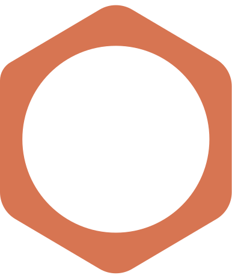

Chat with Claude Code
The full chat for each folder, with the same CLAUDE.md, settings and MCPs as your terminal.
AgentKeep track of all your projects and Claude Code chats on an infinite canvas. Free and open source, it runs on your machine with the subscription you already have.


Drag your folders onto the canvas, start chats and keep an eye on everything from a distance. Argus lets you know when someone needs you.
See what you can doThe full chat for each folder, with the same CLAUDE.md, settings and MCPs as your terminal.
AgentOpen Codex chats next to your Claude ones and compare what each delivers.
AgentA chat passes a step to Gemini, and you follow the result right there.
Orchestration
Open the repository on GitHub from the folder and ask for a full review of a branch.
Code review
The branch badge shows uncommitted files, and one click opens the diff for each.
Version control
A button above the folder runs the dev script from package.json and shows the address.
Servers
In design mode, comment right on the page and Claude updates the right component.
Design
A shell or Claude Code in a folder, with focus mode and the group's Claude account.
Terminal
The local servers list shows what the agents left up, with a shortcut to stop it.
InfraFlow
Write the request, follow the plan, approve what needs approving and review the result. Every chat goes through the same steps, and you can see which one it's on.
Type it, paste a screenshot or dictate what you need.

Use cases
Leave the volume work to the agents while you keep the decisions.
Ask for a branch review and watch the agent read, test and suggest fixes.
Paste the issue link and let the agent gather the context and open the change.
Describe the screen or comment right on it in design mode. The code is your project's code.
Logs, terminal and code side by side on the canvas, with the agent following the leads.
Update CLAUDE.md and the project docs as the code changes.
Update dependencies, clean up warnings and write release notes without babysitting.
The same MCPs, agents and settings as your Claude Code. Nothing to set up again.
Multiple agents
Use whichever agent makes the most sense for each task. A chat can even hand off steps to another agent, and you follow each one.
Your stack
Agent
Models
Runs on
Mac, Windows or Linux, backed by what each one does best. Projects in WSL run inside the distro.
 macOS
macOS WindowsLinuxWSL
WindowsLinuxWSL“Argus boosted my productivity. I can manage several projects at once without losing the memory of any of them. It speeds up my day a lot, and it's become much easier to integrate with other tools, keep the history and switch AIs when I need to.”

Install it, open your folders and start chatting. Once it works for you, share it with your team.
For you
For your team
To contribute
Permissions
Pick the permission mode for each chat, approve commands one by one and see everything that was done. Nothing runs behind your back.
Learn moreAllow this command?
$ pnpm test src/cart
What people who work with Argus every day have to say.
Argus boosted my productivity. I can manage several projects at once without losing the memory of any of them.
It speeds up my day a lot, and it's become much easier to integrate with other tools, keep the history and switch AIs when I need to.
We're using Argus on our projects and it has greatly improved the AI's context and memory, which used to be a struggle because they were inconsistent.
Now the AI performs much better, with specialist agents for each area.
I use it to build prototypes and validate experiences with the PM team.
It's become an essential tool for the projects I'm leading.
We're testing it with our team, and for working with workspaces and multiple developers, it's been a big help.
I created Argus and use it every day, improving it all the time. It's helped me build countless projects.
Today I do 100% of my development in it, and my productivity and output have reached a whole new level.
What people ask most about Argus, the agents and your subscription.
Talk to usA desktop app with an infinite canvas where each project folder becomes a block. Inside it, you chat with coding agents and follow what each one is doing.
The agent is the same. The difference is seeing all your chats together, with status, diffs, permissions and subagents, without hunting through tabs.
No. Argus runs the claude installed on your machine, with the subscription you already have.
The app runs locally, with no server in between. Chats go to the model the same way they would from the terminal.
Yes. There are versions for macOS (Apple Silicon), Windows 10 and 11 and Linux (AppImage), plus support for projects inside WSL.
Models change. Agents change. Argus reads the same files as your Claude Code and keeps everything in plain sight, without locking you into anything.
Building the open way to keep track of coding agents.
Argus is the foundation for working with many agents at once, with everything in view and on your machine.
Download Argus